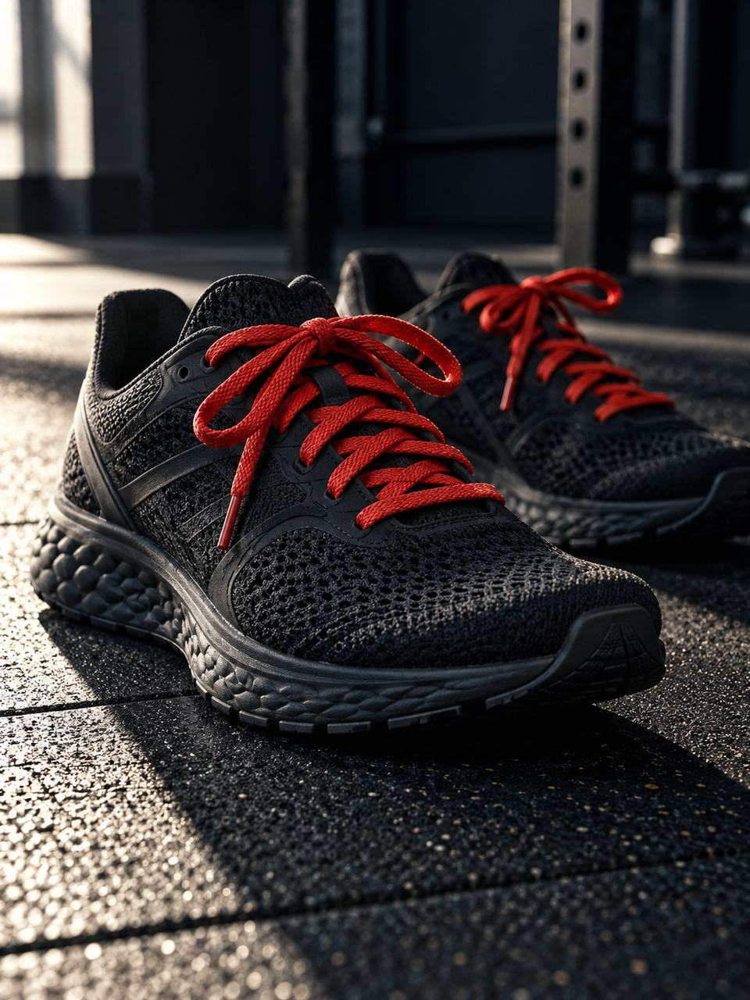
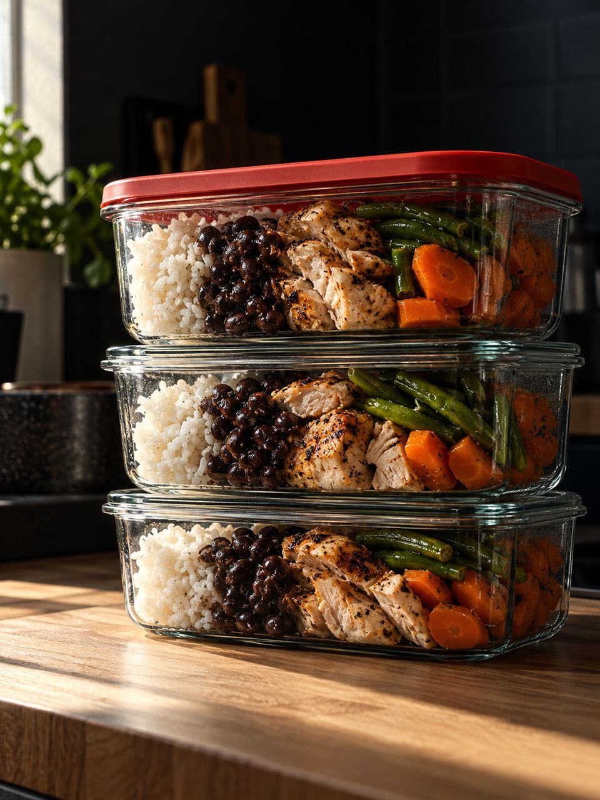
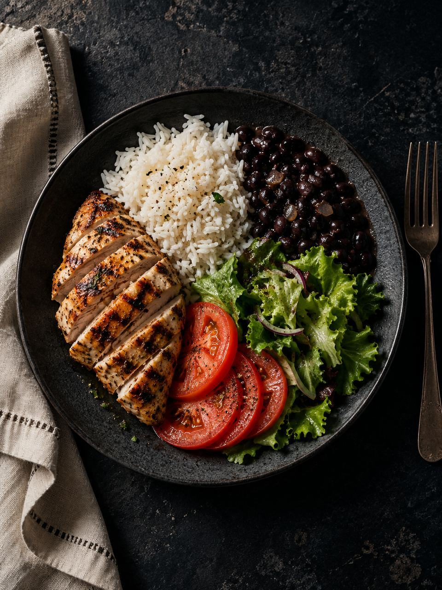

Ketlyn Sagaz · Centro e Ingleses
Nutrição esportiva em Florianópolis Músculo também é patrimônio.
Plano alimentar para construir e preservar a sua massa muscular, seja qual for o seu objetivo, com uma estratégia personalizada para a sua rotina.
Nutricionista Ketlyn de Sá Sagaz · CRN-10 nº 8983 · On-line e presencial
Para quem é
Cada fase pede um plano diferente.
Quem está começando e quem já está em outra fase têm objetivos e margens diferentes para flexibilizar a alimentação.
-
Massa muscular01 Para quem quer construir músculo e cuidar do que já conquistou. -

Treino e desempenho02 Alimentação pensada para o treino que você faz e para a vida fitness. -

Rotina corrida03 Trabalho, filhos e treino na mesma semana, com um plano que consegue se encaixar com as mudanças da sua rotina. -

Composição corporal04 Para quem quer reduzir o percentual de gordura sem tirar o músculo da conta.
Como funciona
Um plano que acompanha você.
O acompanhamento serve para entender o que precisa de mais tempo e o que realmente precisa ser ajustado, dentro das suas necessidades e condições.
Seu objetivo primeiro
A conversa começa pelo que você quer conquistar.
Estratégia
Um plano alimentar totalmente individualizado, baseado no que realmente funciona para você.
Ajustes
Com acompanhamento, o plano recebe os ajustes necessários.
Uma coisa por vez
Escolha uma coisa. Melhore essa coisa. Depois, vá para a próxima.
Sobre
Prazer, eu sou a Ketlyn.
Nutricionista Ketlyn de Sá Sagaz · CRN-10 nº 8983
Pratico o que ensino.
Quero que você tenha clareza sobre o que fazer, com uma estratégia personalizada.
- Plano individualizado
- Avaliação física
Um degrau de cada vez.
Planos
Do mensal ao trimestral.
Os planos valem para o atendimento presencial e para o on-line. Valores e detalhes de cada um pelo WhatsApp.
- 01
Plano mensal
Presencial · On-line
- 02
Plano bimestral
Presencial · On-line
- 03
Plano trimestral
Presencial · On-line
- 04
Consultoria on-line
On-line
- 05
Avaliação física
Serviço
Por que músculo
Músculo também é patrimônio.
Cuidar da massa muscular é investir em saúde e em desempenho, na academia e fora dela.
E dá para começar simplesmente porque você quer estar melhor.
O foco do trabalho é o plano alimentar.
Por onde começar
On-line ou presencial.
Escolha o formato que cabe melhor na sua semana.
On-line
Consultoria e planos on-line, de onde você estiver.
Presencial
No Centro de Florianópolis e nos Ingleses.
Onde fica
Atendimento no Centro.
R. Cristóvão Nunes Pires, 110Centro · Florianópolis–SC
88010-120
- Também nos Ingleses
- Atendimento on-line
Dúvidas
Antes de começar.
Preciso já treinar para começar?
Não. O plano parte do seu objetivo, seja qual for, e do ponto em que você está hoje.
Vou ter que comer a mesma coisa todo dia?
Não. A ideia é ter 2 ou 3 opções de substituição de que você gosta e que consegue fazer na sua rotina, num cardápio fácil de ser seguido.
Posso comer algo fora do planejado?
Pode. O que importa é entender a frequência, a quantidade e o contexto dessas escolhas.
E se o começo for difícil?
O começo exige adaptação, e adaptação leva tempo. Você não precisa acertar tudo de primeira.
Contato
Seja muito bem-vindo(a).
Conte pelo WhatsApp o seu objetivo e como está a sua rotina hoje.